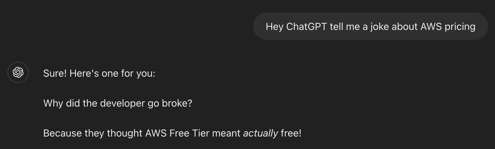

Mocking with dependency injection in Go
A common pattern with an interface to allow for passing mocks in unit tests.
This is a pattern I've used quite a bit at work and is pretty useful for unit testing.
A scenario
Let's suppose we have a service Service which provides various bits of functionality.
One such function is registering users.
This interfaces with Amazon's Cognito service for identity management, as well as doing other things, like maybe saving them to a database:
type Service struct{
CognitoClient *cognitoidentityprovider.Client
// ...Other fields
}
func New() *Service {
return &Service{
CognitoClient: cognitoidentityprovider.New(),
}
}
func (s *Service) RegisterUser(
ctx context.Context,
params RegisterParams,
) error {
slog.Info("registering user")
// Confirm user on Cognito
_, err := s.CognitoClient.ConfirmSignUp(
ctx,
"eu-west-2",
&cognitoidentityprovider.ConfirmSignUpInput{
ClientId: ¶ms.ClientID,
ConfirmationCode: ¶ms.Code,
Username: ¶ms.Username,
},
)
if err != nil {
slog.Error("failed to confirm user sign-up")
return err
}
// ...Do other stuff with database here
return nil
}
Let's write a simple test for this now.
package service_test
func Test_RegisterUserSuccess(t *testing.T) {
s := service.New()
testParams := RegisterParams{
// ...Fill with correct values
}
err := s.RegisterUser(context.Background(), testParams)
require.NoError(t, err)
}
The problem
What happens now? The test will attempt to reach a real version of AWS Cognito. This is undesirable for a couple of reasons.
Firstly, it relies on an actual instance of Cognito being live and hosted. Behemoth that it is, AWS is so widely used that we can consider it reliable, but a smaller service may not be. Network connections, latency and service uptime can all make tests non-hermetic, not to mention AWS' notorious pricing structure being an unnecessary overhead.

Secondly, it violates the principle of unit tests since the bounds of the test exceed the unit of code under test (the RegisterUser function).
The solution?
Dependency injection.
At the time of writing, Wikipedia defines dependency injection as
a programming technique in which an object or function receives other objects or functions that it requires, as opposed to creating them internally
Using this principle we can inject the dependency of the Cognito client into the service of the constructor:
func New(cognitoClient *cognitoidentityprovider.Client) *Service {
return &Service{
CognitoClient: cognitoClient,
}
}
Now we can configure our client however we like and pass it through. This allows for differently configured clients in the real code and the test, however we still have the problem that it's hitting the genuine Cognito service.
Rather than using a concrete Cognito client (which is rigidly inflexible for our purposes), we can inject something that looks like a Cognito client instead. We can accomplish this by writing an interface to mimic the desired functionality. This provides a contract that can accommodate any passed dependency - provided it fulfils the interface.
type IdentityProvider interface {
ConfirmSignUp(ctx context.Context, params *cognitoidentityprovider.ConfirmSignUpInput, optFns ...func(*cognitoidentityprovider.Options)) (*cognitoidentityprovider.ConfirmSignUpOutput, error)
}
And then updating the Service and constructor:
type Service struct{
CognitoClient IdentityProvider
// ...Other fields
}
func New(cognitoClient IdentityProvider) *Service {
return &Service{
CognitoClient: cognitoClient,
}
}
We can then revisit the tests, setting up our mocks for Cognito. Since these also fulfil the IdentityProvider contract, they can be passed to Service.New().
(You can substitute whatever mocks you like here, I like the gomock library as it generates them all for you.)
package service_test
func Test_RegisterUserSuccess(t *testing.T) {
testParams := RegisterParams{
// ...Fill with correct values
}
// Start gomock Controller
ctrl := gomock.NewController(t)
defer ctrl.Finish()
// Initialise mock
mockIdentityProvider := mocks.NewMockIdentityProvider(ctrl)
mockIdentityProvider.EXPECT().ConfirmSignUp(gomock.Any(), "eu-west-2", &cognitoidentityprovider.ConfirmSignUpInput{
ClientId: &testParams.ClientID,
ConfirmationCode: &testParams.Code,
Username: &testParams.Username,
}).Return(nil, nil)
// Pass the mock
s := service.New(mockIdentityProvider)
err := s.RegisterUser(context.Background(), testParams)
require.NoError(t, err)
}
A handy side-effect of using the IdentityProvider interface is that it opens the door for us to add functionality around the Cognito calls in future if we wished. We could write our own shim struct around this to provide extra logging or metric exporting, for instance.